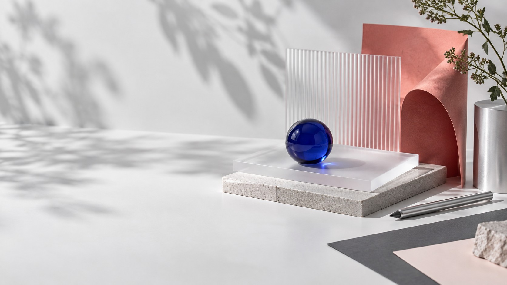

FlowNote
研究协作平台
研究资料散落在访谈、表格和群聊中。我重新组织从记录到洞察的工作流，并参与前端原型实现。
- +28%
- 研究结论复用率
- −41%
- 整理耗时
01采集
02聚类
03洞察
04共创
产品设计 · 创意前端
你好，我是林知夏。用研究、原型与前端实现，让数字产品既清楚，也让人愿意停留。

精选作品
研究资料散落在访谈、表格和群聊中。我重新组织从记录到洞察的工作流，并参与前端原型实现。
把七步预约流程重构为围绕用户意图的三步任务，覆盖研究、服务蓝图和高保真原型。
为小型美术馆设计双语移动导览，让内容、空间和无障碍阅读在同一条路径中成立。
关于我
高级产品设计师，负责复杂工具类产品的研究、交互和设计系统。
产品设计师，与工程团队共同交付 Web 与移动端产品。
工业设计学士，持续关注人、工具和行为之间的关系。
用户研究 · 信息架构 · 交互设计 · 原型验证 · 设计系统 · HTML / CSS · 团队共创
下一段合作